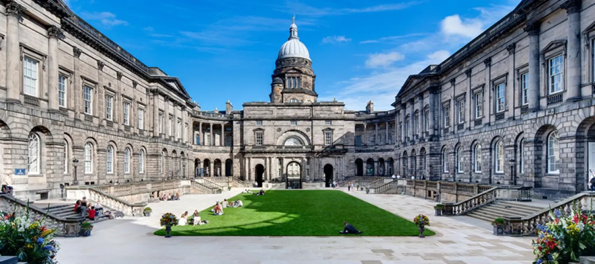

The school's highly rigorous curriculum seamlessly bridges the gap between fundamental biomedical sciences and hands-on clinical practice, placing a strong emphasis on research-led teaching, patient-centered care, and interdisciplinary collaboration. Students are encouraged to develop critical thinking, analytical skills, and a holistic understanding of healthcare, preparing them to tackle complex global health challenges and adapt to the rapidly evolving landscape of modern medicine. Furthermore, Edinburgh's medical heritage is uniquely distinguished by its monumental contributions to global healthcare history; it is the birthplace of revolutionary medical breakthroughs and the alma mater of legendary figures, such as Joseph Lister, who pioneered antiseptic surgery, and Sir James Young Simpson, who discovered the anesthetic properties of chloroform. Today, the University of Edinburgh Medical School continues to champion this legacy of profound innovation, nurturing the next generation of compassionate medical professionals, pioneering scientists, and healthcare leaders who will shape the future of medicine worldwide.